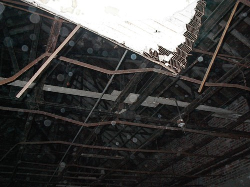

|
Here are a few strange photos sent to me by Ann Dye from Cross Lanes, West Virginia. She visited Lakin Hospital one night with her ghost hunting crew: John W. Dye III, Daniel Pyles, Brandon
Thompson, David Gibeaut, Andy Dent, and Clinton Ward. I have included the photos and stories/explantations below. I want to give all of them a big thank you for sharing their photos with me and for allowing me to post them on the site!!
|
We had just walked into this room on the 3rd floor, no one had walked through to disturb dust or anything. We asked "Is anyone here?",
everyone turned off their flashlights, and the photo was taken. On the digital
picture readout, we could see the orbs and we checked the lens to find it to be
clean of dust/debris. The yellow point of light in the far left window is a
light in the distance, but that was the only light visible from this angle out
of the windows. This picture was taken about 3:55am, on the waning crescent
moon on a clear night, so it was just shy of pitch black outside and inside. A
few more pics of this room were taken subsequently, with numerous orbs in all
the pictures, in different places.
Holly, a website visitor, noticed something else in this photo:
Her first pic in the left corner about half way down there is a mans face just starring. He has dark hair & facial hair. |

|
This is the main room on the 3rd floor where most of the
ceiling has caved in. We walked in and snapped this picture up into the
rafters. We said "Smile for the camera" or something to that effect. There
were no light sources. Along with numerous orbs, if you look just left of the
white ceiling remnants corner, you will see what looks to be a face. If you
zoom in you can see the details of what appears to be a human face, in front of
the metal rafter, smiling but with scowling eyebrows. This picture was VERY
unnerving, but no subsequent photos revealed this face again. |
|
This is another picture of the rafters via a hole in the ceiling, revealing multiple orbs. This was taken after the 'face' picture. As
before, there were no light sources and the lens was clean. |
|
Beth McKinney, a website visitor, noticed some faces in one of Ann's photos. She circled them in the photo to the left. |
Click here to return to the main Lakin State Hospital/West Virginia Industrial Home for Colored Boys page
Where do you want to go? Select your destination:
|